#DeğiştikveGeliştik
Kocaeli Fen Lisesi Ulusal Forumu bizler için yalnızca bir konferans değil, aynı zamanda uzun soluklu bir hayalin, yoğun emeğin ve güçlü bir vizyonun ürünüdür.
Konferansımızı düzenleme fikri ilk olarak geçtiğimiz yılın Haziran ayında doğmuş; o andan itibaren zihnimizi meşgul eden temel soru, bu konferansı en nitelikli ve en sürdürülebilir biçimde nasıl gerçekleştirebileceğimiz olmuştur. Bu doğrultuda yaz aylarından itibaren planlama, içerik geliştirme ve hazırlık çalışmalarına aralıksız şekilde başlamış bulunduk.
Eylül ayına ulaştığımızda, sistemli ve kararlı çalışmamız sayesinde güçlü bir hazırlık süreci tamamlanmıştı. Okulumuzda daha önce benzer kapsamda bir konferans gerçekleştirilmemiş olmasına rağmen, hazırlığımızın üst düzey seviyede olması sayesinde girişimimiz kısa sürede kabul görmüş; gerekli resmi süreçler titizlikle yürütülerek tamamlandı.
Bu noktada bir konferans düzenlerken inandığımız temel ilke bir iş nasıl başlarsa öyle devam eder. Bu anlayış doğrultusunda hedefimiz yalnızca bir konferans düzenlemek değil; okulumuzda kalıcı, kurumsal kimliği olan ve gelecek yıllarda da sürdürülebilecek bir konferans kültürü oluşturmaktır.
Bu amaçla, konferansın işleyiş modelini en ince ayrıntısına kadar planladık ve okul bünyesinde ulaşabildiğimiz herkese forumun vizyonunu, kapsamını ve hedeflerini anlattık. Süreç boyunca ekip yapılanmamızı oluştururken sürdürülebilirliği temel ilke olarak benimsedik. Her dönemde usta-çırak ilişkisini esas alarak yeni kuşakların hem akademik süreçlere hem de konferansın işleyişine hâkim olmasını sağladık.
"Genç fikirler geleceğin teminatıdır" sloganıyla çıktığımız bu yolda en büyük hedefimiz; biz gençlerin memleket meselelerine duyarsız olmadığını, aksine bu konular üzerinde düşünebildiğini, mantıklı ve saygı çerçevesinde tartışabildiğini ve çözüm önerileri geliştirebildiğini göstermektir.
Bu amacın hayata geçmesindeki en büyük güç kaynağımız ise siz değerli katılımcılarımızsınız. Tüm hazırlık sürecimiz; sizlerin bu platformdan yeni dostluklar edinmiş, farklı perspektifler kazanmış ve unutulmaz deneyimlerle zenginleşmiş şekilde ayrılmanız içindir.
Kocaeli Fen Lisesi Ulusal Forumu'nun yalnızca birkaç gün süren bir etkinlik değil; düşünsel gelişiminize katkı sağlayan, kalıcı bağlar kurmanıza vesile olan ve geleceğe dair umutlarınızı güçlendiren bir konferans deneyimi olmasını temenni ediyoruz.
Ulusal Forum; lise öğrencilerinin ülke gündemindeki ekonomik, sosyal, teknolojik ve siyasal konuları tartıştığı, çözüm önerileri geliştirdiği ve karar taslakları hazırladığı akademik bir simülasyon etkinliğidir. Katılımcılar sadece dinleyici değildir, aktif tartışmacıdır. Belirli komitelerde görev alarak güncel sorunlar üzerine politika üretirler ve tartışma sonunda yazılı karar metinleri ortaya çıkar.
Etkinliğimize Hazırlık, 9., 10., 11. ve 12. sınıf öğrencileri katılabilir.
Konferans kültürünü gerçekten bilen ve her sene bir öncekinden daha iyisini yapmaya çalışan bir ekibiz. Oturumlarımızda gündemlerimizi özenle seçiyor, sağlam bir araştırma altyapısıyla ilerliyoruz. KFLUF'u tercih etmek; kendine yatırım yapmak, güçlü dostluklar kurmak ve nitelikli bir konferans deneyimi yaşamak demektir.
KFLUF 2026, 15–17 Mayıs tarihleri arasında üç gün boyunca gerçekleşecektir. Aşağıda konferansımızın günlük oturum programını bulabilirsiniz. İlk iki gün komisyon oturumlarına, son gün ise meclis oturumlarına ayrılmıştır.
KFLUF 2026 hakkında merak ettiklerinizi aşağıda bulabilirsiniz. Cevabını bulamadığınız bir sorunuz varsa sosyal medya hesaplarımızdan bize ulaşabilirsiniz.
15–17 Mayıs 2026 tarihlerindeki tüm oturum ve etkinliklerin saatlerini görüntüleyin.
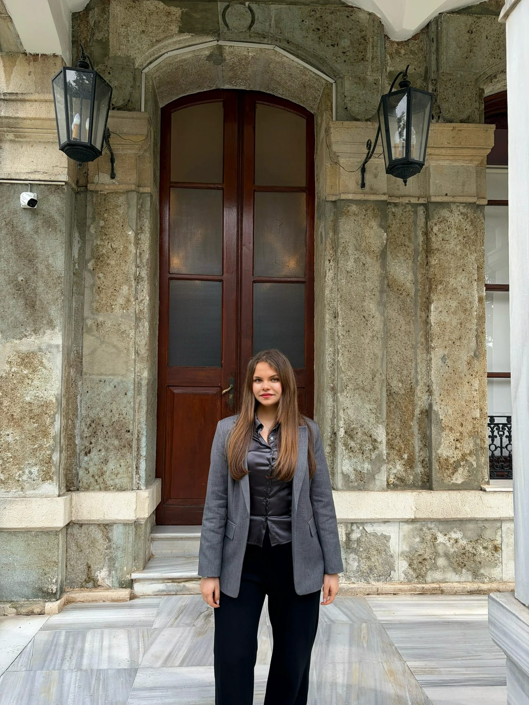
Erva Koç
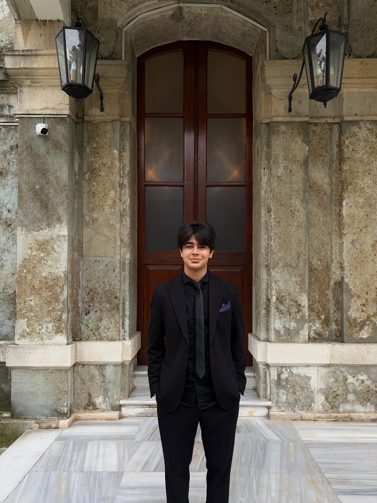
Orhan Turan
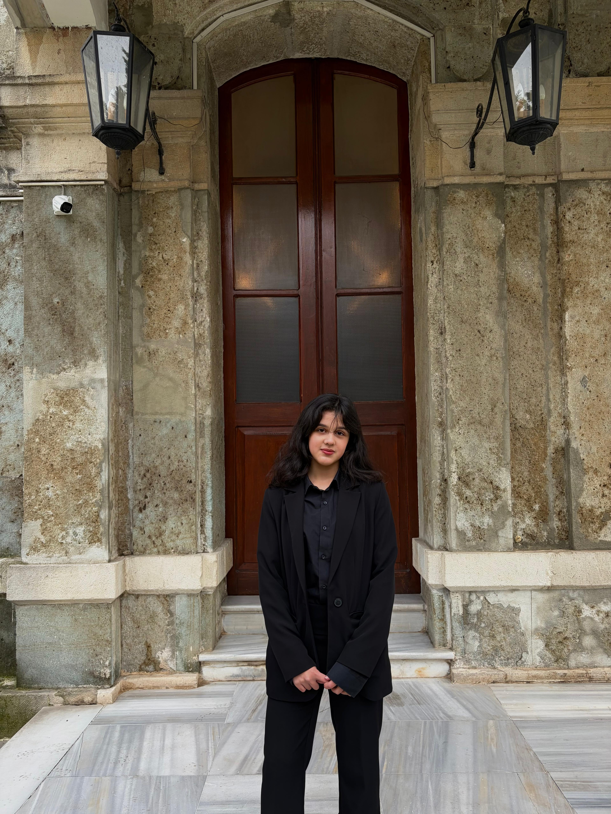
Zeynep Sarımehmetoğlu
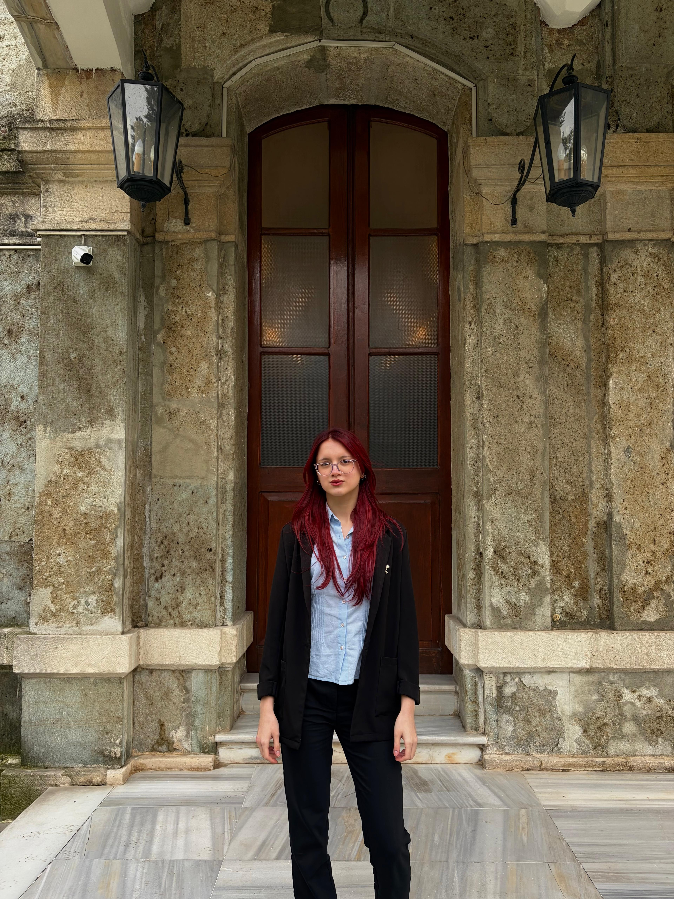
Bilge Yıldızeli
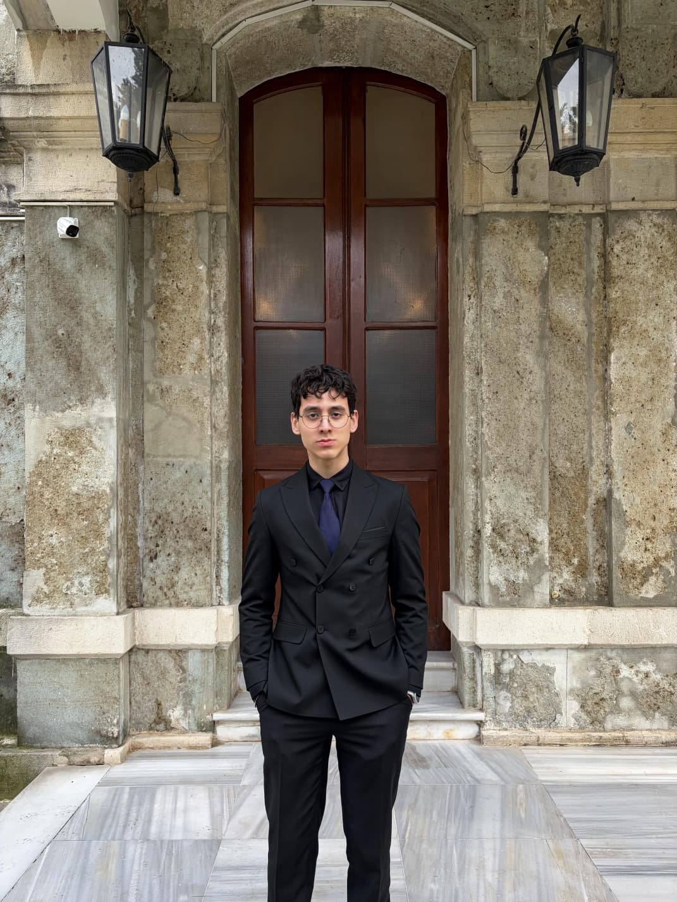
Ahmet Yavuz Alan
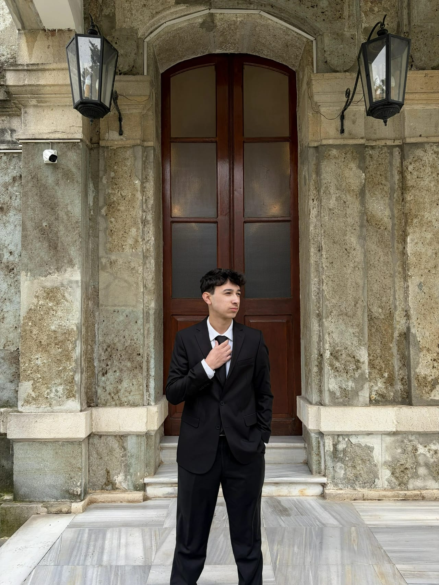
Berkay Karakaya
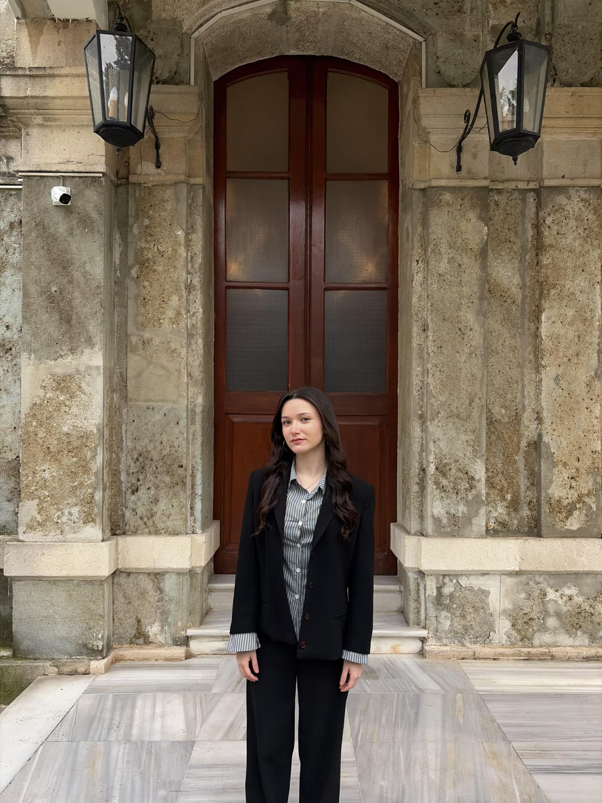
Ceren Bilgin
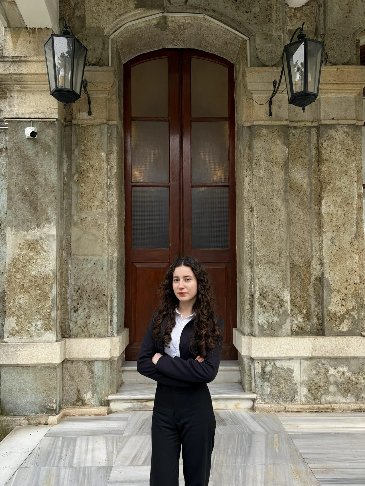
Sudenaz Saka
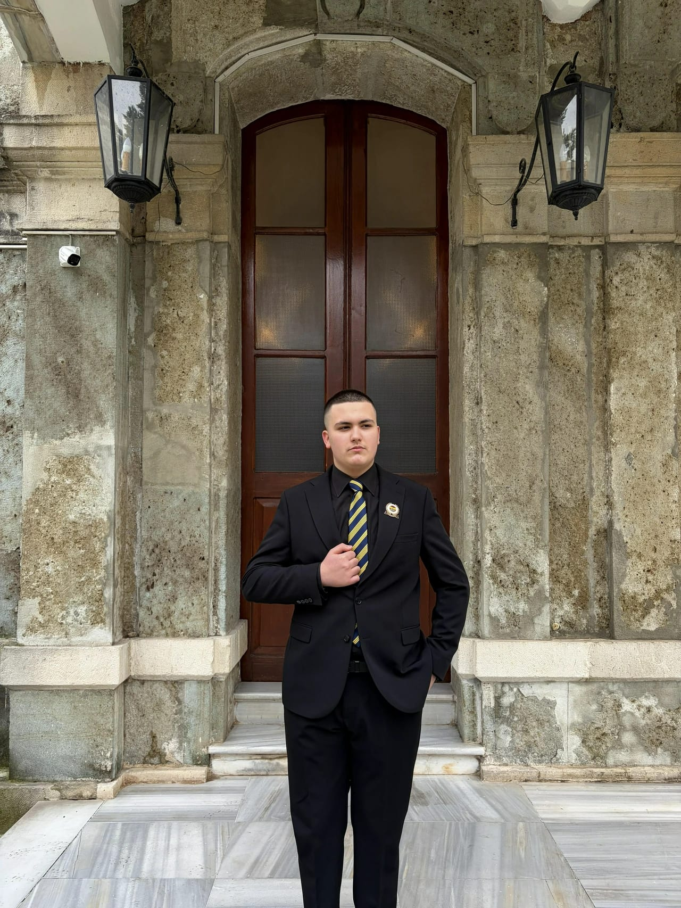
Mevlana Enes Gökce
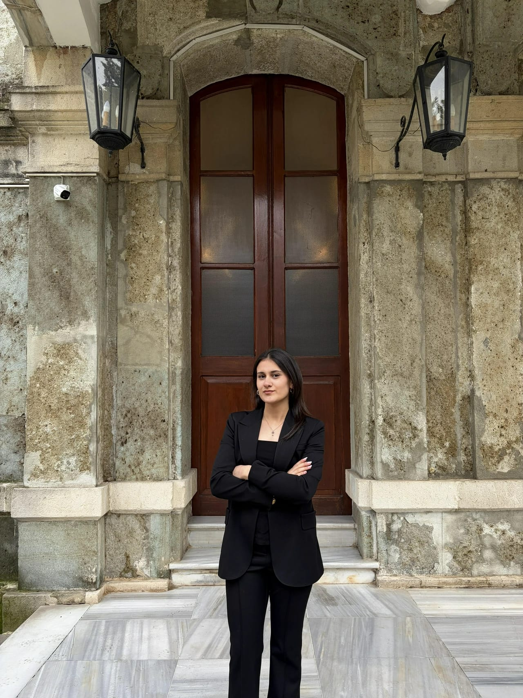
Zeynep Bilge Karakuş
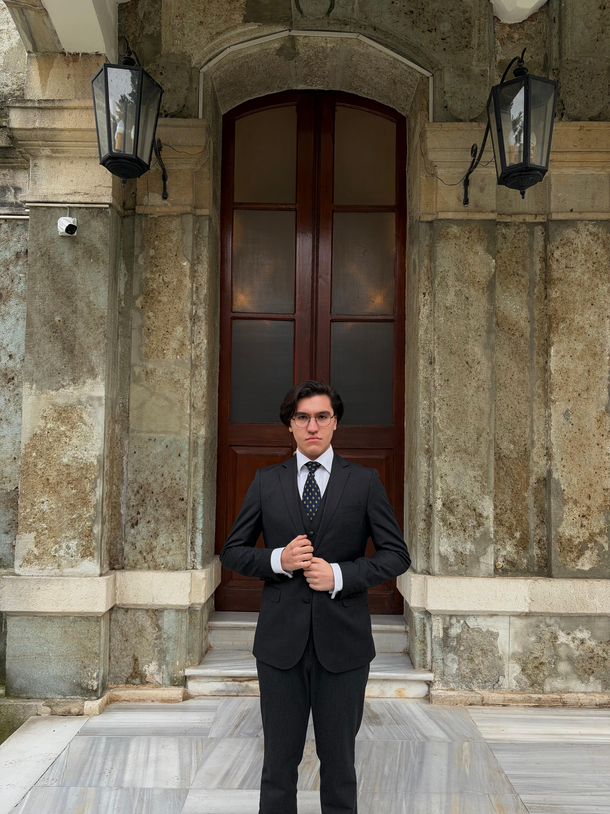
Efe Keskin
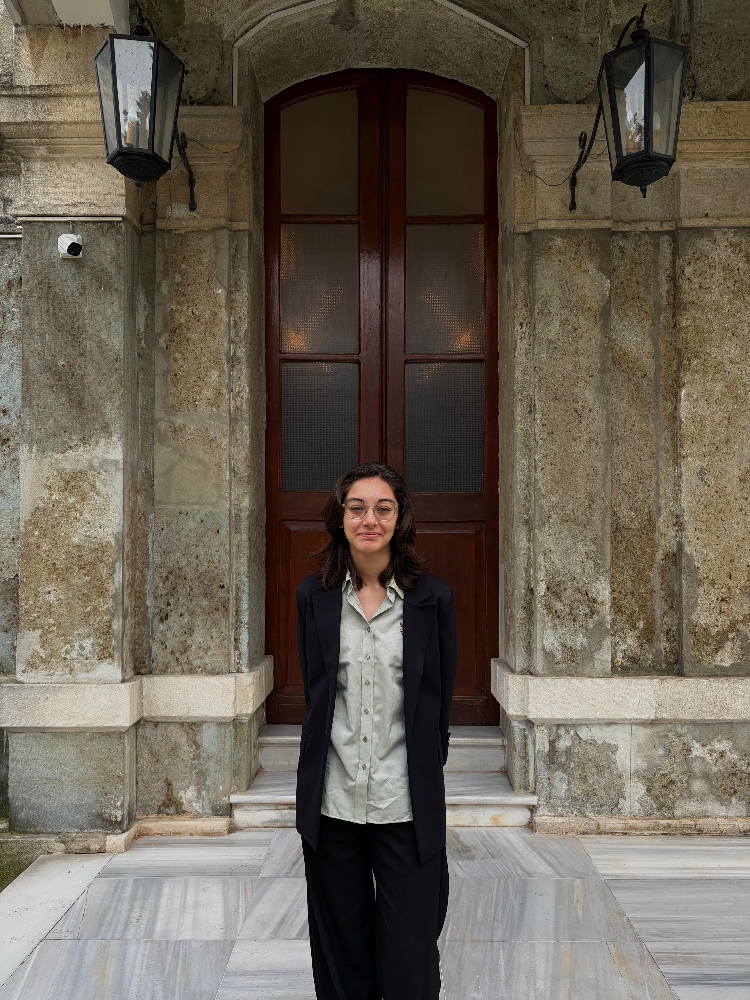
Zümranur Kuş
Ulaştırma ve altyapı, modern toplumların ekonomik gelişimi, toplumsal refahı ve günlük yaşamın sürdürülebilirliği açısından kritik öneme sahip alanlardan biridir. Gelişmiş ve güvenilir ulaşım sistemleri; insanların iş, eğitim ve sosyal hayatlarına erişimini kolaylaştırırken, güçlü iletişim ve altyapı ağları ise toplumun bilgiye erişimini ve kriz anlarında koordinasyonunu mümkün kılmaktadır. Türkiye gibi büyük nüfusa ve hızla büyüyen şehirleşmeye sahip ülkelerde ise bu alanlarda ortaya çıkan sorunlar yalnızca teknik meseleler olmaktan çıkarak sosyal, ekonomik ve çevresel boyutları olan kapsamlı tartışma konularına dönüşmektedir. Ulaştırma ve Altyapı Komisyonu, Türkiye’de ulaşım sistemleri ve iletişim altyapısı alanında karşılaşılan temel sorunları ele almayı ve bu sorunlara yönelik sürdürülebilir çözüm önerileri geliştirmeyi amaçlamaktadır. Günümüzde internet ve iletişim sistemleri yalnızca bireysel iletişim aracı değil; aynı zamanda ekonomi, eğitim, sağlık ve kamu hizmetlerinin işleyişi için vazgeçilmez bir altyapı haline gelmiştir. Ancak Türkiye’de özellikle afet anlarında şebeke yoğunluğu ve altyapı yetersizliği nedeniyle iletişim sistemlerinin zaman zaman kesintiye uğradığı görülmektedir. Bu durum arama-kurtarma faaliyetlerinin koordinasyonunu zorlaştırmakta ve yardım çalışmalarının etkinliğini azaltmaktadır. Bunun yanı sıra internet hızının gelişmiş ülkelerle kıyaslandığında daha düşük olması ve yeni nesil teknolojilere geçişin yavaş ilerlemesi, dijital dönüşüm sürecini de etkilemektedir. Özellikle 5G gibi modern iletişim teknolojilerine geçiş sürecinin hızlandırılması ve internet altyapısının güçlendirilmesi önemli bir noktadır. Trafik cezalarının gelir dağılımına göre yapılmaması da ulaşım konusundaki tartışma alanlarından biridir. Düşük ve orta gelirli bireyler için ağır bir ekonomik yük oluşturabilen bu cezalar, yüksek gelir grubundaki bireyler için aynı derecede caydırıcı olmayabilmektedir. Bu durum trafik kurallarına uyum konusunda eşitsizlik yaratabileceği gibi, kamuoyunda adalet tartışmalarına da yol açmaktadır. Günümüzde birçok şehir çevre dostu ve sürdürülebilir ulaşım modellerini teşvik etmek amacıyla bisiklet kullanımını artırmaya yönelik politikalar geliştirmektedir. Ancak Türkiye’de bisiklet yollarının sayısının sınırlı olması ve mevcut yolların zaman zaman yayalar veya motosikletler tarafından işgal edilmesi bisikletli bireyler için güvenlik sorunları yaratmaktadır. Bu durum bisiklet kullanımını azaltmaktadır. Büyükşehirlerde nüfus artışı ve yoğun trafik nedeniyle toplu taşıma araçları günlük yaşamın vazgeçilmez bir parçası haline gelmiştir. Buna rağmen bazı şehirlerde toplu taşıma araçlarının sayısının yetersiz olması, sefer sıklıklarının bazı hatlarda düşük kalması ve araçların aşırı yoğun kullanılması yolcular için ciddi zorluklar yaratmaktadır. Bunun yanı sıra toplu taşıma araçlarında klima kullanımının yeterince denetlenmemesi gibi hizmet kalitesini etkileyen sorunlar da vatandaşların rahatsız olduğu durumlardır. Toplu ulaşım sistemlerinde uygulanan indirimli ve ücretsiz seyahat kartları da ulaşımdaki tartışma konularındandır.. Öğrenciler, yaşlılar ve bazı sosyal gruplar için sağlanan bu uygulamalar sosyal devlet anlayışının önemli bir parçası olmakla birlikte, finansal sürdürülebilirlik ve ulaşım sisteminin dengesi açısından farklı görüşlerin ortaya çıkmasına neden olabilmektedir. Son yıllarda bazı taksi şoförlerinin kısa mesafe yolcu almaması, belirli saatlerde hizmet vermekten kaçınması veya yabancı turistlere öncelik tanıması gibi sorunlar kamuoyunda geniş yer bulmaktadır. Bu durum hem vatandaşların ulaşım hakkını olumsuz etkilemekte hem de şehir içi ulaşım sisteminin güvenilirliğini zedeleyebilmektedir. Trafik kültürü ve trafik bilinci de Türkiye’de ulaşım politikaları açısından önemli bir konudur. Trafik kurallarının yeterince bilinmemesi veya önemsenmemesi, trafik kazalarının artmasına ve şehir içi ulaşımın düzensiz hale gelmesine neden olabilmektedir. Okullarda verilen trafik eğitimi ve kamu spotları bu konuda önemli adımlar olsa da toplum genelinde daha güçlü bir trafik bilincinin oluşturulması gerektiği görülmektedir Türkiye’de afet anlarında yaşanan iletişim kesintilerinin önüne geçebilmek için mobil şebeke ve internet altyapısının güçlendirilmesi adına kamu ve özel sektör arasında nasıl bir iş birliği modeli oluşturulmalıdır? Trafik cezalarının gelir düzeyine göre düzenlenmesi uygulaması Türkiye’de hayata geçirilmeli midir? Eğer uygulanacaksa bu sistemin adil ve sürdürülebilir şekilde işlemesi nasıl sağlanabilir? Büyükşehirlerde toplu taşıma, bisiklet yolları ve taksi hizmetleri arasındaki dengeyi sağlayarak hem çevre dostu hem de erişilebilir bir şehir içi ulaşım sistemi oluşturmak için hangi düzenlemeler yapılmalıdır?
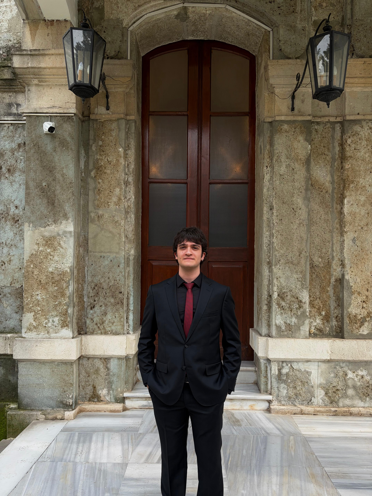
Toprak Umut Usanmaz
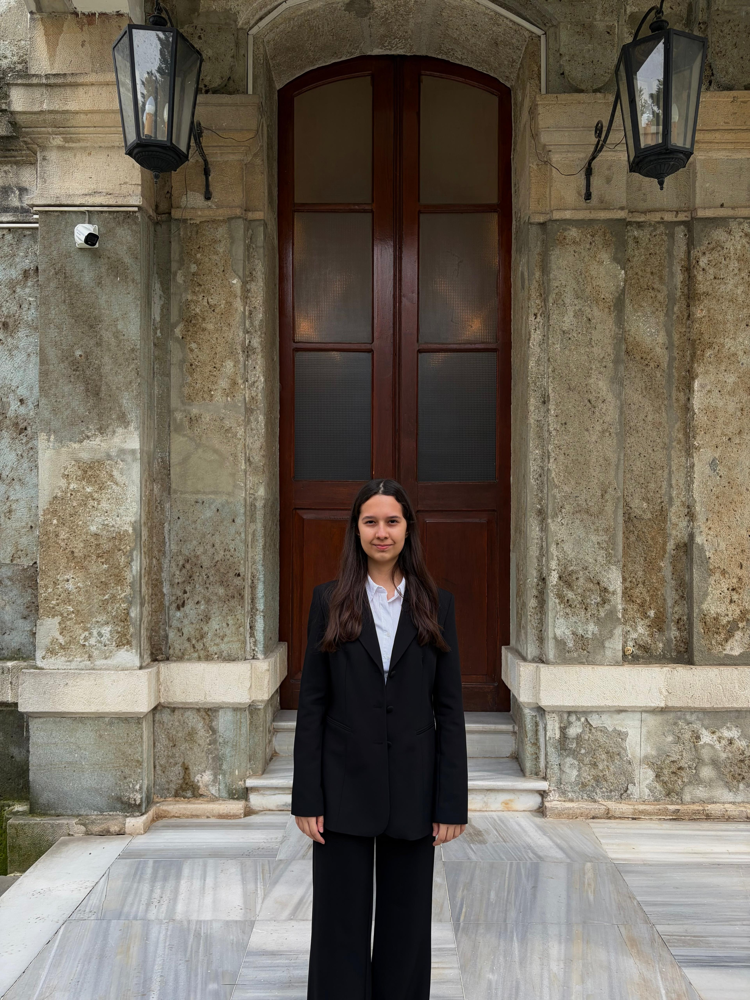
Elif Özcan
Ruh Sağlığı Politikaları ve Hukuki Altyapının Güçlendirilmesi Türkiye’de ruh sağlığı hizmetlerinin yetkinliği; hâlâ yürürlüğe girmemiş çağdaş, bütüncül ve hak temelli bir Ruh Sağlığı Yasası eksikliği, fiziksel sağlık hizmetlerine kıyasla bütçe ve öncelik dengesizliği, veri analizi ve toplumla paylaşım noktasındaki şeffaflık eksiklikleri ile karar alma süreçlerinde alanında uzman mesleklerle çok disiplinli katılımın sınırlı olması gibi faktörlerle engellenmektedir. Söz konusu hususlarla ilgili problem tespitleri yapılmalı ve gerekli düzenlemelere gidilerek toplum düzeninin temelini oluşturan psikoloji ve ruh sağlığı alanı yetkinliğe kavuşturulmalıdır. Türkiye’de Artan Obezite Oranlarının Halk Sağlığı Krizine Dönüşmesinin Önlenmesi Çocuklar ve ergenler arasında artan obezite oranları hem bireysel hem de toplumsal sağlık açısından önemli bir risk oluşturmaktadır. Bu durumun önlenmesi için koruyucu ve önleyici politikaların geliştirilmesi, ailelerin sağlıklı beslenme ve yaşam tarzı konusunda bilinçlendirilmesi, okullarda müfredat, kantin politikaları ve fiziksel aktivite programlarının yeniden düzenlenmesi gerekmektedir. Bu iyileştirmeler, bireylerin sağlıklı alışkanlıklar kazanmasını ve obezitenin toplum sağlığı krizine dönüşmesinin önlenmesini sağlayacaktır. Pandemi ve Benzeri Küresel Sağlık Krizlerinde Etkin Yönetim Mekanizmaları Küresel sağlık krizlerinin yönetiminde bağımsız, bilim temelli ve hızlı karar alma süreçleri kritik öneme sahiptir. Etkili kriz yönetimi için kurumlar arası yetki ve sorumlulukların netleştirilmesi, en verimli yolların geliştirilmesi gerekmektedir. Söz konusu krizlerde uluslararası iş birliği ve yardımlaşma planları hazırlanmalı buna paralel olarak ise ulusal egemenlik ve küresel dayanışma arasında da bir denge sağlanmalıdır. Bu sayede kriz anlarında etkin müdahale, kaynakların doğru kullanımı ve halk sıhhatinin korunması en sağlıklı yoluna kavuşabilir. Ruh sağlığı politikaları ve hukuki altyapı nasıl güçlendirilebilir? Türkiye’de artan obezite oranlarının halk sağlığı problemine dönüşmesi nasıl önlenebilir? Küresel sağlık krizlerinde etkin yönetim mekanizmaları hangi yönde planlanmalıdır?
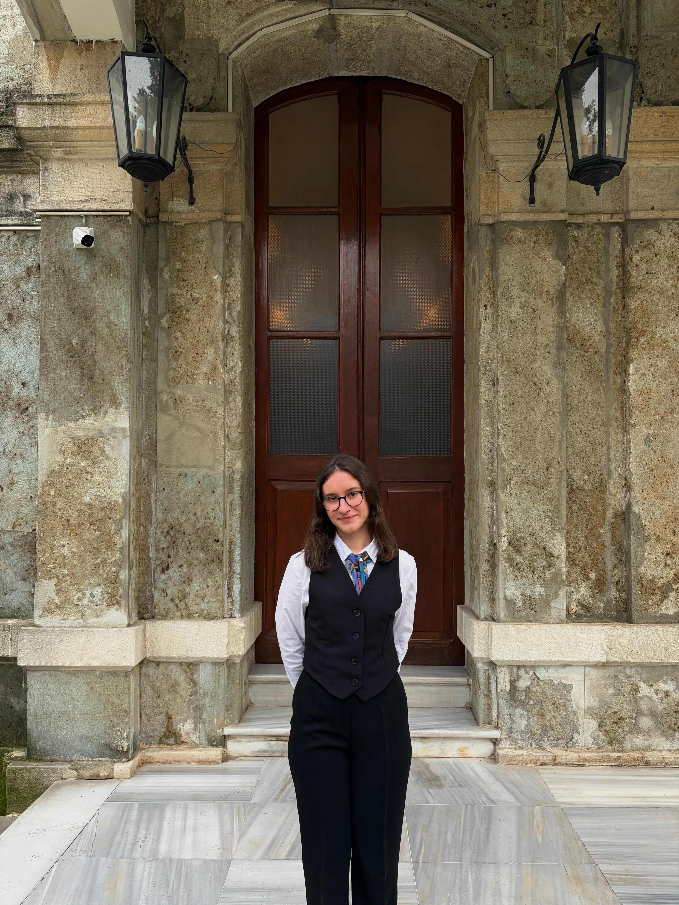
Ecrin Ela Aydın
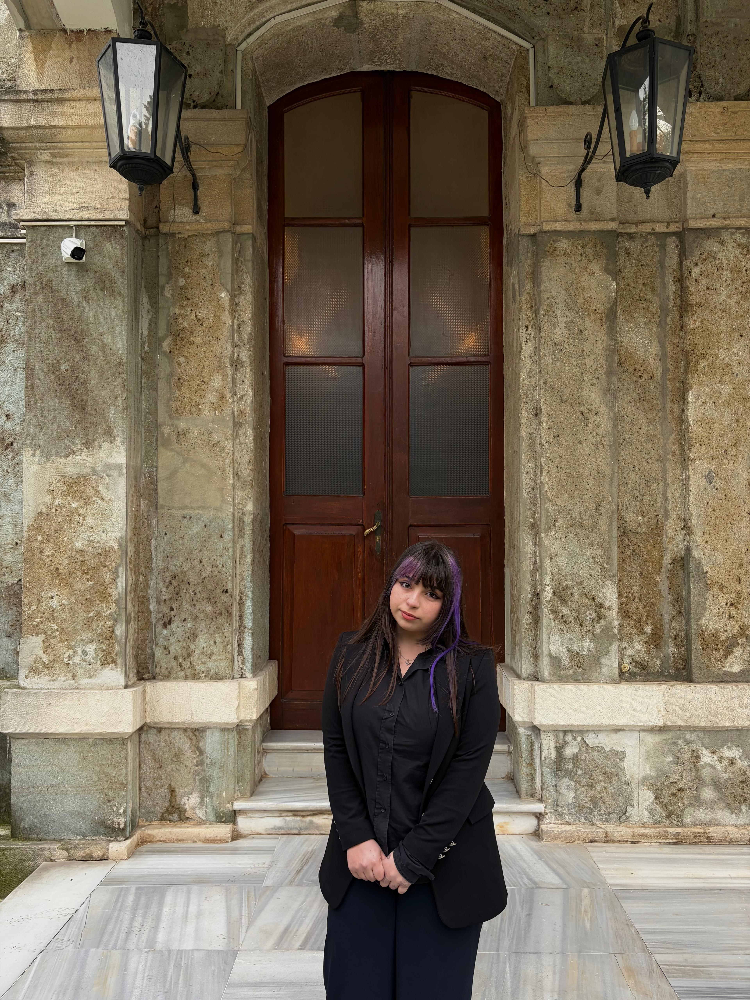
Elif Ece Uzun
Çocuk istismarı; fiziksel, psikolojik ve cinsel istismar gibi farklı biçimlerde ortaya çıkabilen ve çocukların sağlıklı gelişimini ciddi bir şekilde etkileyen önemli bir toplumsal sorundur. Bu durum yalnızca bireysel değil, aynı zamanda sosyal ve kurumsal sorumluluk gerektiren bir mesele olarak karşımıza çıkmaktadır. Çocukların güvenli bir ortamda büyüyebilmesi için istismar vakalarının erken tespit edilmesi, farkındalığın artırılması ve mağdur çocukların psikolojik, sosyal ve hukuki açıdan etkin şekilde desteklenmesi büyük önem taşımaktadır. Bu sorun doğrultusunda ilk gündem maddemiz "Çocuk istismarının önlenmesi, istismar vakalarının erken tespiti ve mağdur çocukların korunması için alınacak sosyal, hukuki ve kurumsal önlemler" olarak belirlenmiştir. Sosyal medya platformlarının yaygınlaşmasıyla birlikte şiddet, zorbalık ve suç içerikli paylaşımlar da daha görünür hale gelmiştir. Bu tür içeriklerin özellikle çocuklar ve gençler üzerinde olumsuz etkiler yaratabileceği ve bazı durumlarda suçu normalleştirebileceği tartışılmaktadır. Bu nedenle çocukların dijital ortamda karşılaşabilecekleri zararlı içeriklerden korunması için ailelerin, eğitim kurumlarının, sosyal medya platformlarının ve ilgili kurumların birlikte hareket etmesi; dijital farkındalık çalışmalarının ve koruyucu önlemlerin güçlendirilmesi büyük önem taşımaktadır. Bu sorun doğrultusunda ikici gündem maddemiz "Sosyal medyada yaygınlaşan suç içerikli paylaşımlar çocukları suça özendirme konusunda ne kadar etkilidir ve çocukları bu olumsuz etkilerden korumak için alınacak önlemler" olarak belirlenmiştir. 1.) Çocuk istismarının erken tespiti için okullar, sağlık kuruluşları ve sosyal hizmet kurumları arasında nasıl bir iş birliği mekanizması kurulmalıdır ve bu sistemin etkili işlemesi için hangi somut adımlar atılmalıdır? 2.) Sosyal medyada suç ve şiddet içeriklerinin çocukları olumsuz etkilemesini önlemek için aileler, eğitim kurumları ve sosyal medya platformları hangi ortak sorumlulukları üstlenmeli ve bu sorumluluklar nasıl uygulanabilir hale getirilebilir? 3.) İstismar mağduru çocukların korunması ve yeniden topluma kazandırılması için psikolojik, sosyal ve hukuki destek mekanizmaları nasıl güçlendirilmeli ve bu süreçte devlet kurumları ile sivil toplum kuruluşlarının rolü nasıl artırılmalıdır?
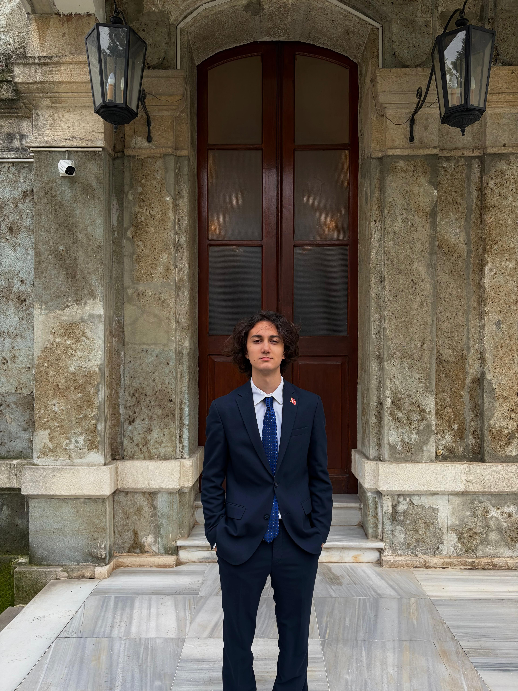
Utku Kaçar
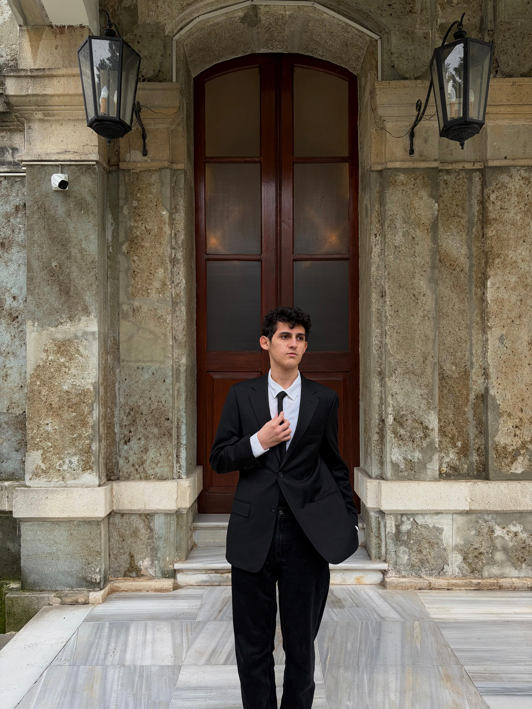
Akif Kağan Şimşek
Rekabet hukukunun temel sorunlarından biri, çoğu zaman önleyici bir mekanizma olarak değil, ihlal gerçekleştikten sonra devreye giren bir denetim aracı olarak işlemesidir. Bu durum piyasalarda tekelleşme eğilimlerinin erken aşamada tespit edilmesini zorlaştırmaktadır. Özellikle piyasa yapısını sürekli olarak izleyebilecek güçlü ve şeffaf denetim mekanizmalarının yeterince gelişmemiş olması, rekabet ihlallerinin ancak belirli bir büyüklüğe ulaştıktan sonra fark edilmesine neden olmaktadır. Sektörel raporlamalarda veri güvenliğinin tam olarak sağlanamaması da piyasa analizlerinin sağlıklı biçimde yapılmasını engelleyen önemli bir faktör olarak ortaya çıkmaktadır. Bunun yanında denetim kurullarının seçilme süreçlerinin yeterince şeffaf olmaması ve denetim faaliyetlerinin etkin biçimde denetlenmemesi, kurumsal güvenilirliği zayıflatabilmektedir. Ayrıca şirket devralmaları ve birleşmelerinin piyasa rekabeti üzerindeki etkilerinin her zaman yeterli kapsamda değerlendirilmemesi, bazı sektörlerde yoğunlaşmanın artmasına ve rekabet ortamının zayıflamasına yol açabilmektedir. Bu nedenle rekabet hukukunun daha etkin işlemesi için erken uyarı sistemlerinin geliştirilmesi, veri güvenliğinin güçlendirilmesi ve birleşme-devralma süreçlerinin daha kapsamlı analiz edilmesi büyük önem taşımaktadır. Türkiye ekonomisinin 1980’li yıllardan itibaren karşı karşıya kaldığı en önemli yapısal sorunlardan biri yüksek ve süreklilik gösteren enflasyon problemidir. Enflasyonun kalıcı hale gelmesinde para politikası kurumlarının yeterince bağımsız çalışamaması önemli bir etken olarak görülmektedir. Merkez bankasının bağımsızlığının tam olarak sağlanamaması, para politikalarının uzun vadeli ekonomik istikrar yerine kısa vadeli hedeflere göre şekillenmesine yol açabilmektedir. Bunun yanı sıra kamu harcamaları ile kamu gelirleri arasında sürdürülebilir bir denge kurulamaması da enflasyonist baskıları artıran faktörlerden biri olarak ortaya çıkmaktadır. Yüksek enflasyon özellikle asgari ücretle çalışanlar ve sabit gelirli vatandaşlar üzerinde ciddi bir ekonomik baskı oluşturmakta, satın alma gücünün hızla düşmesine ve toplumsal sınıf farklılıklarının daha belirgin hale gelmesine neden olmaktadır. Ayrıca enflasyon oranlarının belirlenmesi sürecinde kurumların doğru ve güvenilir veri üretme konusunda zaman zaman yetersiz kalması, ekonomik göstergelere olan toplumsal güveni de zedeleyebilmektedir. Bu nedenle enflasyonla mücadelede kurumsal bağımsızlığın güçlendirilmesi, kamu maliyesinde disiplin sağlanması ve ekonomik verilerin şeffaf şekilde paylaşılması kritik öneme sahiptir. Rekabet hukukunun çoğu zaman ihlal gerçekleştikten sonra devreye giren bir mekanizma olarak işlemesi piyasalarda hangi sorunların ortaya çıkmasına neden olmaktadır? Metne göre yüksek ve kalıcı enflasyonun oluşmasında para politikası kurumlarının bağımsızlığının yetersiz olması ekonomiyi nasıl etkilemektedir? Rekabet hukukunun daha etkin işlemesi ve enflasyonla mücadelede başarı sağlanabilmesi için metinde hangi kurumsal ve yapısal önlemler önerilmektedir?
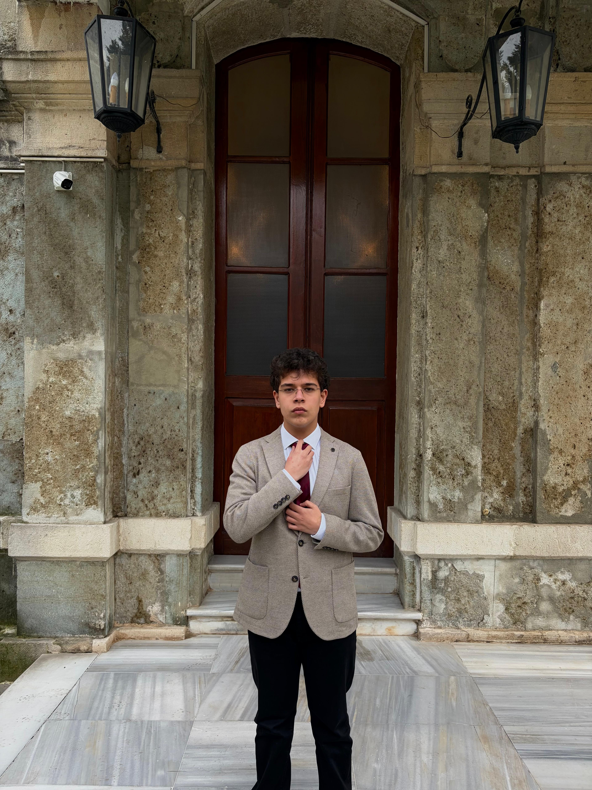
Onur Sarp Yaka
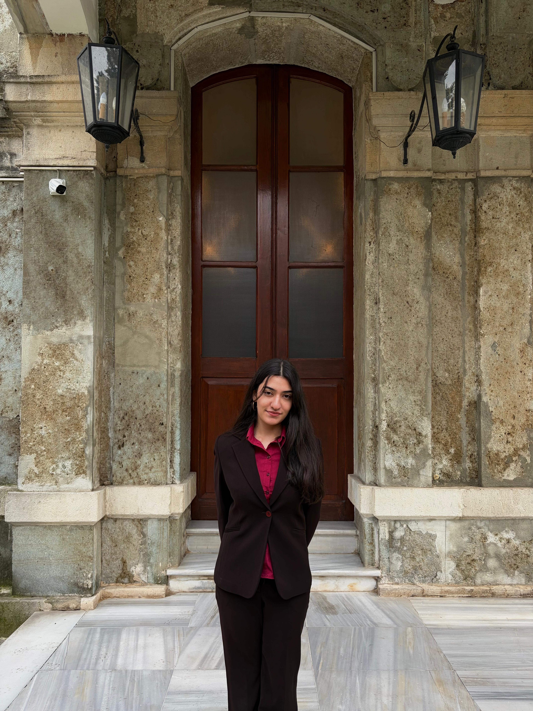
Nil Deniz Hazar
Eğitim sistemi, bireylerin bilgi ve beceri kazanmasının yanı sıra toplumsal eşitliğin sağlanmasında da önemli bir rol oynamaktadır. Ancak ekonomik koşullar, eğitim politikaları ve okullar arasındaki imkân farklılıkları, öğrencilerin eğitim süreçlerini doğrudan etkilemektedir. Bu durum, bazı öğrencilerin eğitim hayatında daha fazla zorluk yaşamasına neden olmaktadır. Ekonomik açıdan dezavantajlı öğrenciler, eğitim sürecinde çeşitli sorunlarla karşılaşabilmektedir. Maddi imkânların yetersizliği, öğrencilerin derslerine odaklanmasını ve akademik başarılarını olumsuz etkileyebilmektedir. Özellikle yoksul ailelerden gelen öğrenciler için okulda sağlıklı beslenme imkânına ulaşmak her zaman mümkün olmamaktadır. Öğle yemeği desteğinin bulunmaması, öğrencilerin gün içinde yeterli enerjiye sahip olamamasına ve derslerde dikkatlerini toplamakta zorlanmalarına yol açabilmektedir. Bunun yanında bazı öğrenciler, okula ulaşım konusunda da güçlük yaşamaktadır. Ulaşım imkânlarının sınırlı olması veya maliyetlerin yüksek olması, öğrencilerin okula düzenli devam etmesini zorlaştıran önemli bir unsur olarak görülmektedir. Eğitim sistemi içinde tartışılan bir diğer önemli konu, üniversite sayısının artmasıyla birlikte ara eleman ihtiyacının yeterince karşılanamamasıdır. Son yıllarda öğrencilerin büyük bir bölümünün üniversite eğitimine yönelmesi, mesleki eğitim alanlarına olan ilginin azalmasına neden olmuştur. Meslek liselerinin sayısının bazı bölgelerde yetersiz olması ve bazı okullarda verilen eğitimin verimlilik açısından yeterli olmaması bu durumu etkileyen faktörler arasında yer almaktadır. Bunun yanında Mesleki Eğitim Merkezlerinde (MESEM) öğrenciler için her zaman güvenli ve düzenli çalışma ortamlarının sağlanamaması, mesleki eğitime yönelik olumsuz algıların oluşmasına yol açabilmektedir. Ayrıca üniversiteye girişin zamanla daha erişilebilir hâle gelmesi, öğrencilerin büyük çoğunluğunun akademik eğitime yönelmesine neden olmaktadır. Ortaöğretimin zorunlu olması da bazı öğrencilerin ilgi ve yeteneklerine uygun mesleki alanlara daha erken yönelmesini güçleştirmektedir. Eğitimde fırsat eşitliği konusu da önemli sorunlardan biri olarak değerlendirilmektedir. Okullar arasında teknolojik imkânlar açısından belirgin farklılıklar bulunmaktadır. Bazı okullarda bilgisayar, internet ve dijital eğitim araçları yeterli düzeyde bulunmazken, bazı okullarda bu imkânlar daha gelişmiş durumdadır. Bunun yanında devlet okulları ile özel okullar arasındaki imkân farklarının fazla olması, öğrencilerin eğitim süreçlerinde farklı deneyimler yaşamalarına neden olmaktadır. Ayrıca birçok okulda öğrenci başına düşen öğretmen sayısının düşük olması, öğretmenlerin her öğrenciyle yeterince ilgilenmesini zorlaştırmaktadır. Bu durum, öğrencilerin akademik gelişimi üzerinde de etkili olabilmektedir. Bu sorunlar, eğitim sisteminde hem sosyal hem de yapısal eşitsizliklerin bulunduğunu göstermektedir. Eğitimde daha dengeli bir yapı oluşturulabilmesi için, bu farklılıkların dikkatle ele alınması ve eğitim politikalarının bu doğrultuda geliştirilmesi büyük önem taşımaktadır. Bu çerçevede, eğitim sisteminde ara eleman yetiştirilmesi için alınabilecek önlemler, okullar arasındaki fiziksel imkân farklılıklarının giderilmesi ve ekonomik açıdan dezavantajlı öğrencilerin eğitime devam edebilmeleri için sağlanabilecek destekler üzerinde durulacaktır. Ekonomik açıdan dezavantajlı öğrencilerin eğitim sürecinde yaşadığı beslenme ve ulaşım sorunlarının önüne geçilebilmesi için hangi politikalar uygulanabilir? Türkiye’de üniversiteleşmenin artması, meslek liselerinin verimliliğinin düşük olması, Mesleki Eğitim Merkezlerindeki (MESEM) çalışma koşulları ve üniversiteye girişin daha erişilebilir hâle gelmesi gibi faktörlerin ortaya çıkardığı ara eleman eksikliği nasıl giderilebilir? Okullarda teknolojik imkânların yetersiz olması, devlet ve özel okullar arasındaki imkân farklarının artması ve öğrenci başına düşen öğretmen sayısının düşük olması gibi durumların eğitim üzerindeki etkileri karşısında ne tür önlemler alınabilir?